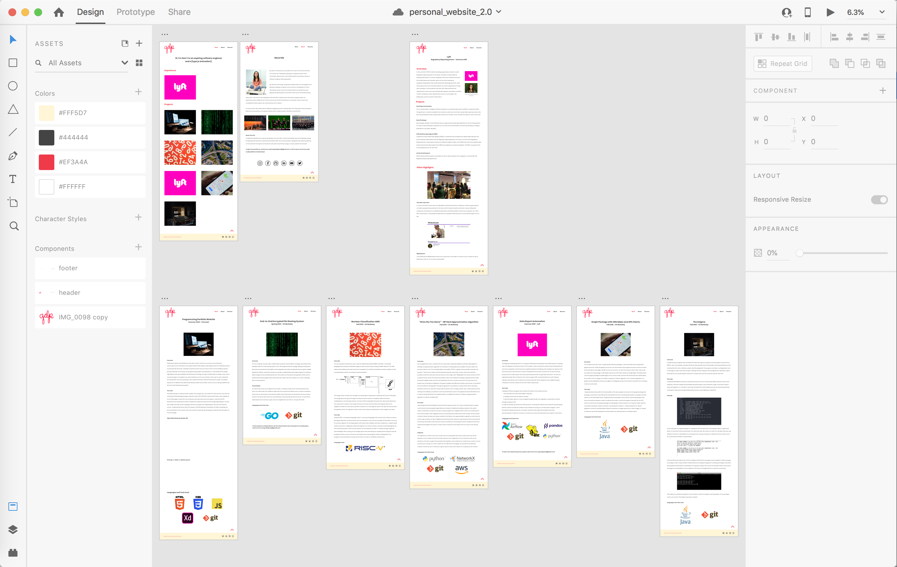
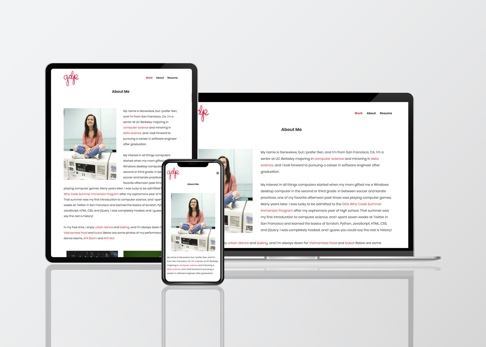

Programming Portfolio Website
Personal - Summer 2020
Overview
Sheltering in place was definitely not the plan I had in mind for Summer 2020, but unforeseen circumstances can still lead to new opportunities! After taking a web design class at UC Berkeley during my Spring 2020 semester, I decided to spend my time stuck at home building myself a personal website to showcase my programming projects and experience. I used Adobe XD to design high fidelity mockups, Notability and Photoshop to design my logo, and Illustrator to design a few icons. I sourced images on unsplash.com and iconfinder.com for my mockups, and then I got to work coding the site using HTML, CSS, and JavaScript. I challenged myself to make my website fully responsive to different size screens, and I had a lot of fun diving headfirst into this front end development project!
The Code
Working page by page, I placed content into HTML files using element tags. I then stylized all of my HTML pages using CSS to fix my layouts and add my color scheme and typography. I used CSS media queries and JavaScript in order to implement responsive layouts that change depending on screen size and a navigation bar that changes form for mobile screens. I implemented some other fun things in CSS like keyframe animations for fade transitions and bouncing back arrows (only on laptop/desktop), and I also used the TypeIt JavaScript plugin to add the text animation on my home page.
High Fidelity Mockups (Adobe XD)

Desktop vs. Tablet vs. Mobile Responsiveness
